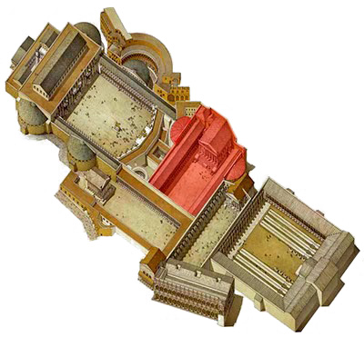
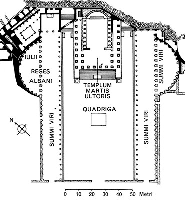

Il Foro di Augusto è stato inaugurato nel 2 sec. a.C., segue il modello di una piazza porticata dominata da un
tempio ma con spazio ridotto e il tempio addossato al muro di fondo di uno dei due lati brevi; sono presenti
delle novità architettoniche :l’uso di marmi colorati, sia nei pavimenti sia negli alzati e l’incremento di spazi
degli spazi coperti per via dell’inserimento di esedre, incavi semicircolari sovrastati da una cupola, collegate
alla piazza, agli estremi dei lati lunghi.
Il Foro era il secondo dei Fori Imperiali, in ordine cronologico, il primo fu quello di Cesare, era largo 118m e lungo 125m e disposto perpendicolarmente a quello di Cesare. Era protetto dai frequenti incendi che si verificavano nel quartiere popolare della Suburra, da un grande muro (alto più di 30 m ) di forma quadrata,costruito in tufo, con blocchi di peperino e di pietra gabina a vista, e possedeva anche tre marcapiani in blocchi di travertino.
il muro della piazza aveva una pianta irregolare, adattata all’andamento degli antichi condotti fognari. Possedeva due ingressi secondari lungo il muro, ai lati del tempio, quello più a nord aveva tre fornici, costruzioni arcuate a volta, quello più a sud, denominato L’Arco dei Pantani, aveva una sola fornice alla base delle scale furono eretti archi trionfali nel 19 d.C. dedicati a Druso Minore (frammenti nell’iscrizione) e a Germanico per la vittoria contro gli Armeni.
All’interno troviamo una galleria che ospitava le statue degli uomini più importanti della storia romana ad es. Romolo ed Enea, ampie esedre dietro i portici laterali e una statua colossale di Ottaviano nella sala di fronte al portico settentrionale.
Il Foro era il secondo dei Fori Imperiali, in ordine cronologico, il primo fu quello di Cesare, era largo 118m e lungo 125m e disposto perpendicolarmente a quello di Cesare. Era protetto dai frequenti incendi che si verificavano nel quartiere popolare della Suburra, da un grande muro (alto più di 30 m ) di forma quadrata,costruito in tufo, con blocchi di peperino e di pietra gabina a vista, e possedeva anche tre marcapiani in blocchi di travertino.
il muro della piazza aveva una pianta irregolare, adattata all’andamento degli antichi condotti fognari. Possedeva due ingressi secondari lungo il muro, ai lati del tempio, quello più a nord aveva tre fornici, costruzioni arcuate a volta, quello più a sud, denominato L’Arco dei Pantani, aveva una sola fornice alla base delle scale furono eretti archi trionfali nel 19 d.C. dedicati a Druso Minore (frammenti nell’iscrizione) e a Germanico per la vittoria contro gli Armeni.
All’interno troviamo una galleria che ospitava le statue degli uomini più importanti della storia romana ad es. Romolo ed Enea, ampie esedre dietro i portici laterali e una statua colossale di Ottaviano nella sala di fronte al portico settentrionale.


Il portico incorniciava ai lati la piazza rettangolare di 70x50 m con due porticati e al centro la colossale statua
di Augusto alla guida della quadriga, un cocchio tirato da quattro cavalli allineati, issata su un piedistallo.
Il portico era costituito da colonne in giallo antico e capitelli corinzi in marmo bianco, sormontato da un
attico retto dalle cariatidi, come dell'Eretteo di Atene, alternate a clipei, scudi incorniciati con al centro la
testa di Giove o di altre divinità; era sostenuto da colonne in marmo africano, che dava luce agli ambienti.
L’opera era ricca di decorazioni : le esedre pavimentate da lastre rettangolari in marmo giallo antico e africano; la parete di fondo delle esedre ornate da semi-colonne in marmo giallo antico che incorniciavano a coppia le nicchie con le statue dei personaggi più importanti della storia repubblicana; all’esterno, davanti alle colonne, vennero posizionate su dei basamenti altre statue. Le statue delle esedre erano grandi il doppio, a nord nella nicchia centrale c’erano Enea, Anchise, Ascanio; ai lati gli antenati della gens Iulia e i re di Albalonga; nell’esedra opposta è stata collocata la statua di Romolo con il trofeo della sua vittoria; nelle nicchie restanti vi sono i grandi uomini della storia romana nelle nicchie superiori vi erano i trofei in una sala quadrata, in fondo al portico di sinistra, si trova ancora il basamento della statua di 14 m di Augusto, posta dall’imperatore Claudio; le 25 statue dei personaggi illustri avevano incisi sul piedistallo il nome, le cariche e talvolta anche le imprese.
La pavimentazione era a lastre di marmi colorati con disegni geometrici (simili a quello del Pantheon) con marmi di bardiglio di Luni, marmo africano e marmo giallo antico una breve gradinata collega i portici alla piazza.
L’opera era ricca di decorazioni : le esedre pavimentate da lastre rettangolari in marmo giallo antico e africano; la parete di fondo delle esedre ornate da semi-colonne in marmo giallo antico che incorniciavano a coppia le nicchie con le statue dei personaggi più importanti della storia repubblicana; all’esterno, davanti alle colonne, vennero posizionate su dei basamenti altre statue. Le statue delle esedre erano grandi il doppio, a nord nella nicchia centrale c’erano Enea, Anchise, Ascanio; ai lati gli antenati della gens Iulia e i re di Albalonga; nell’esedra opposta è stata collocata la statua di Romolo con il trofeo della sua vittoria; nelle nicchie restanti vi sono i grandi uomini della storia romana nelle nicchie superiori vi erano i trofei in una sala quadrata, in fondo al portico di sinistra, si trova ancora il basamento della statua di 14 m di Augusto, posta dall’imperatore Claudio; le 25 statue dei personaggi illustri avevano incisi sul piedistallo il nome, le cariche e talvolta anche le imprese.
La pavimentazione era a lastre di marmi colorati con disegni geometrici (simili a quello del Pantheon) con marmi di bardiglio di Luni, marmo africano e marmo giallo antico una breve gradinata collega i portici alla piazza.
Il tempio di Marte Ultore era dedicato a “Colui che dalla sconfitta risolleva”,era un tempio periptero sine
postico, cioè senza il colonnato posteriore,di ordine corinzio; fu costruito da Augusto per ricordare la vittoria
di Filippi, per vendicare la morte di suo zio Cesare.
Si innalzava su podio di 3,5 m rivestito di marmo, con con una superficie di 40x30 m; il podio sorreggeva la cella e le colonne corinzie sulla facciata e sui fianchi, sul muro di fondo terminava con una lesena, un pilastro verticale che sporge da una parete muraria con funzione decorativa.
Era costruito in cemento e blocchi tufacei sotto i muri, in travertino e blocchi tufacei sotto le colonne poiché avevano un peso maggiore; i colonnati e le pareti esterne della cella erano in marmo lunense; possedeva una scalinata di 17 gradini in marmo sul fronte e un altare in cementizio rivestito in marmo al centro. La cella aveva due ordini di colonne staccate dalle pareti interne, a cui corrispondevano altrettante lesene; sul fondo un’abside incurvata, attraverso un’intercapedine, con una breve scalinata rivestita da lastre alabastrine; un podio per le statue di culto di Venere e Marte, le altre erano incorniciate tra le colonne nelle nicchie delle pareti.
Il tempio possedeva due ingressi, uno ad arco singolo chiamato l’Arco “dei Pantani” e uno con tre archi. Nell’Aula del Colosso, una sala molto ricca di opere d’arte in cui vi era la gigantesca statua dedicata al Genio di Augusto,finiva il portico settentrionale. Dopo la morte di Augusto due archi monumentali furono aggiunti ai piedi delle scalinate dedicati a Germanico e Druso.
Il frontone era decorato da una scena sacra al centro Marte appoggiato ad una lancia, alla sua destra Venere ed Eros, seguiti da Romolo in atto di prendere gli auspici, alla sua sinistra la Dea Fortuna con la cornucopia, seguita dalla Dea Roma armata. Alle estremità erano le personificazioni del Palatino e del Tevere. Dietro il basamento era il penetrale, nel quale erano conservate le insegne legionarie sottratte a Crasso e ad Antonio dai Parti e restituite ad Augusto.
Si innalzava su podio di 3,5 m rivestito di marmo, con con una superficie di 40x30 m; il podio sorreggeva la cella e le colonne corinzie sulla facciata e sui fianchi, sul muro di fondo terminava con una lesena, un pilastro verticale che sporge da una parete muraria con funzione decorativa.
Era costruito in cemento e blocchi tufacei sotto i muri, in travertino e blocchi tufacei sotto le colonne poiché avevano un peso maggiore; i colonnati e le pareti esterne della cella erano in marmo lunense; possedeva una scalinata di 17 gradini in marmo sul fronte e un altare in cementizio rivestito in marmo al centro. La cella aveva due ordini di colonne staccate dalle pareti interne, a cui corrispondevano altrettante lesene; sul fondo un’abside incurvata, attraverso un’intercapedine, con una breve scalinata rivestita da lastre alabastrine; un podio per le statue di culto di Venere e Marte, le altre erano incorniciate tra le colonne nelle nicchie delle pareti.
Il tempio possedeva due ingressi, uno ad arco singolo chiamato l’Arco “dei Pantani” e uno con tre archi. Nell’Aula del Colosso, una sala molto ricca di opere d’arte in cui vi era la gigantesca statua dedicata al Genio di Augusto,finiva il portico settentrionale. Dopo la morte di Augusto due archi monumentali furono aggiunti ai piedi delle scalinate dedicati a Germanico e Druso.
Il frontone era decorato da una scena sacra al centro Marte appoggiato ad una lancia, alla sua destra Venere ed Eros, seguiti da Romolo in atto di prendere gli auspici, alla sua sinistra la Dea Fortuna con la cornucopia, seguita dalla Dea Roma armata. Alle estremità erano le personificazioni del Palatino e del Tevere. Dietro il basamento era il penetrale, nel quale erano conservate le insegne legionarie sottratte a Crasso e ad Antonio dai Parti e restituite ad Augusto.

Ottaviano aveva promesso di costruire il tempio in onore di Marte Ulteriore, dopo aver sconfitto gli assassini
di Cesare e ricevuti i massimi poteri civili e militari si occupò della riorganizzazione urbanistica e
architettonica cercando di rispettare i progetti lasciati sulla carta da Cesare.
il tempio sostitutiva un’edicola provvisoria nel Campidoglio l’opera venne finanziata con il bottino di guerra ma per il tempio Ottaviano utilizzò il suo denaro.
Il foro venne rimpiazzato dai successivi fori imperiali e il tempio venne abbattuto, vi costruirono sopra il podio nel IX secolo la chiesa di San Basilio e le altre strutture del foro si trasformarono in un convento, vi si insediarono i cavalieri di San Giovanni e lo restaurarono nel Quattrocento.
Sul podio nel 1568 venne costruita la chiesa dedicata alla Santissima Annunziata e nel 1570 venne realizzato un riempimento di terreno da parte del cardinale Bonelli.
Rimasero nel tempio solo tre colonne del lato destro e parte della parete della cella, studiati da architetti rinascimentali e restaurarono a partire dal XIX sec. demolendo il campanile, facendo scavi, restaurando i pavimenti, il muro di fondo e le colonne superstiti del tempio.
il tempio sostitutiva un’edicola provvisoria nel Campidoglio l’opera venne finanziata con il bottino di guerra ma per il tempio Ottaviano utilizzò il suo denaro.
Il foro venne rimpiazzato dai successivi fori imperiali e il tempio venne abbattuto, vi costruirono sopra il podio nel IX secolo la chiesa di San Basilio e le altre strutture del foro si trasformarono in un convento, vi si insediarono i cavalieri di San Giovanni e lo restaurarono nel Quattrocento.
Sul podio nel 1568 venne costruita la chiesa dedicata alla Santissima Annunziata e nel 1570 venne realizzato un riempimento di terreno da parte del cardinale Bonelli.
Rimasero nel tempio solo tre colonne del lato destro e parte della parete della cella, studiati da architetti rinascimentali e restaurarono a partire dal XIX sec. demolendo il campanile, facendo scavi, restaurando i pavimenti, il muro di fondo e le colonne superstiti del tempio.